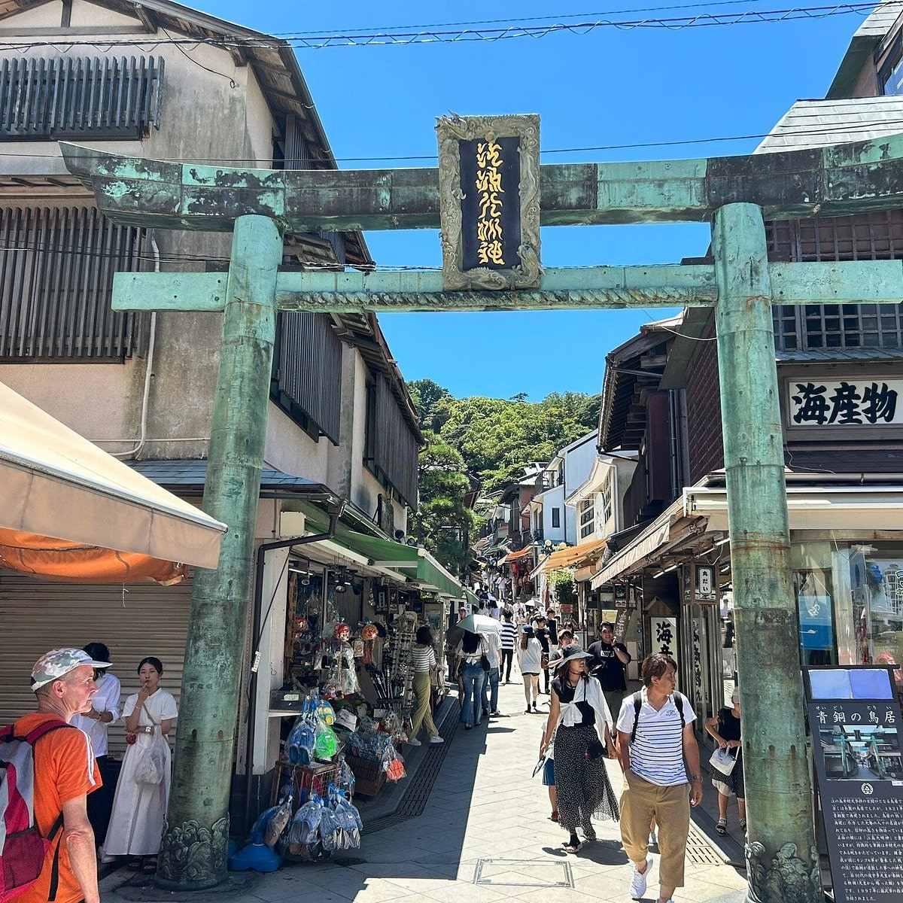

Бэндзайтэн Накамисэ-дори
Лавки и небольшие рестораны тянутся от входа на остров к святилищу, сохраняя характер торгового подхода для паломников.
🇯🇵 Показать местному
〒251-0036 神奈川県藤沢市江の島1丁目4-13付近（江ノ島郵便局）
Что этоТорговая улица между входом на Эносиму и святилищем.
ГлавноеСочетание паломнического пути, лавок и небольших заведений.
Не пропуститеПерспективу улицы, поднимающейся от моря к святилищу.
- Торговые фасады — по обеим сторонам прохода.
- Вывески ресторанов и сувенирных лавок — над входами.
- Подъём к святилищу — в глубине уличной перспективы.
- Не останавливайтесь для съёмки посреди узкого прохода; у прилавков оставляйте место другим посетителям.
- Часы у лавок различаются. Еду и покупки оплачивают отдельно от свободной прогулки.
История и подробности
Накамисэ-дори показывает Эносиму в масштабе повседневной улицы: витрины стоят близко к проходу, над ними сменяются вывески, а впереди начинается подъём к святилищу. Здесь торговля связана с самим устройством островного пути. Людям, пришедшим поклониться Бэндзайтэн, были нужны еда, ночлег и вещи на память; поэтому подход обрастал заведениями.
Название «накамисэ» обозначает торговый ряд у религиозного центра. На Эносиме он соединяет вход на остров и святилище: рядом работают рестораны, сувенирные лавки и гостиницы. Смотрите, как меняется улица по мере подъёма: открытое приморское пространство постепенно уступает тесным фасадам и подходу к воротам.